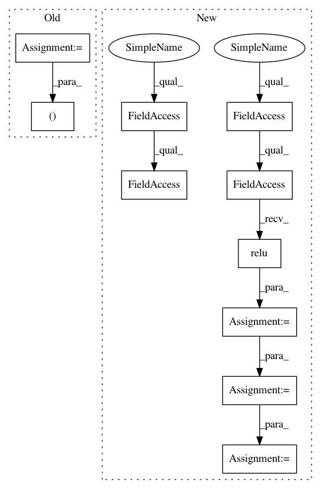

4e43734dd0b7f1c026069af64151a8f52f41060d,torch_geometric/nn/conv/gat_conv.py,GATConv,forward,#GATConv#Any#Any#,86
Before Change
def forward(self, x, edge_index):
edge_index, _ = remove_self_loops(edge_index)
edge_index, _ = add_self_loops(edge_index, num_nodes=x.size(0))
x = torch.mm(x, self.weight).view(-1, self.heads, self.out_channels)
After Change
\right)\right)}
{\sum_{k \in \mathcal{N}(i) \cup \{ i \}}
\exp\left(\mathrm{LeakyReLU}\left(\mathbf{a}^{\top}
[\mathbf{\Theta}\mathbf{x}_i \, \Vert \, \mathbf{\Theta}\mathbf{x}_k]
\right)\right)}.
Args:
in_channels (int): Size of each input sample.
out_channels (int): Size of each output sample.
heads (int, optional): Number of multi-head-attentions.
(default: :obj:`1`)
concat (bool, optional): If set to :obj:`False`, the multi-head
attentions are averaged instead of concatenated.
In pattern: SUPERPATTERN
Frequency: 3
Non-data size: 10
Instances
Project Name: rusty1s/pytorch_geometric
Commit Name: 4e43734dd0b7f1c026069af64151a8f52f41060d
Time: 2019-07-03
Author: matthias.fey@tu-dortmund.de
File Name: torch_geometric/nn/conv/gat_conv.py
Class Name: GATConv
Method Name: forward
Project Name: rusty1s/pytorch_geometric
Commit Name: 4e43734dd0b7f1c026069af64151a8f52f41060d
Time: 2019-07-03
Author: matthias.fey@tu-dortmund.de
File Name: torch_geometric/nn/conv/gat_conv.py
Class Name: GATConv
Method Name: forward
Project Name: Shawn1993/cnn-text-classification-pytorch
Commit Name: 555a0d9d2cf74b0322a3366da927cc0d61dda171
Time: 2017-02-11
Author: 343270711@qq.com
File Name: model.py
Class Name: CNN_Text
Method Name: forward
Project Name: rusty1s/pytorch_geometric
Commit Name: d9421968d52736a2c1d84d26ef2c335a1be4511b
Time: 2019-05-22
Author: matthias.fey@tu-dortmund.de
File Name: examples/pointnet++_part_seg/pointnet2_part_seg.py
Class Name: PointNet2PartSegmentNet
Method Name: forward